10 How to Counteract Runaway Polarization
In a 2012 book 1, Daron Acemoglu (Nobel Prize in Economics, 2024) and Harvard political scientist James Robinson use extensive observations from countries around the world to argue that nations typically have two mutually-exclusive stable regimes. Successful, prosperous democracies are built on a virtuous cycle of strong, inclusive, political and economic institutions that reinforce pluralism and make
>
usurpation of power by a dictator, a faction within the government, or even a well-meaning president much more difficult” (p.332).
Alternatively, extractive (exploitative) institutions create a vicious circle, in which
[e]xtractive political institutions lead to extractive economic institutions, which enrich a few at the expense of many” (p.343).
Two points in Acemoglu and Robinson’s thesis are critical to our discussions. First, economic and political institutions mutually reinforce each other, creating hard-to-dislodge stable states. Second, the alternative to pluralist, participatory government of the people by the people is economic and political RAP concentrating power and wealth in the hands of the few.
RAP arises because the number of people we can reliably cooperate and trade with is bounded. Absent harshly enforced laws, as groups get bigger, it gets harder to ensure cooperative interactions. We can follow Ostrom’s principles to nurture and maintain pro-cooperativity social institutions. However – because polarization is a naturally-occurring phenomenon – such efforts require ongoing vigilance and dedication. The best way to beat cancer is to detect it early. In the same way, we need to continually look for signs of nascent RAP and counteract it before it becomes ingrained.
Decentralized and layered, large-scale cooperative societies such as the European Union demonstrate that large-scale cooperation is perfectly feasible. However, developing and maintaining trust among diverse, large communities with evolving political, economic, and cultural aspirations is not a given. It takes effort to create the conditions that make cooperation everybody’s optimal strategy.
Like life itself, Human Systems tend to operate most efficiently near the edge of chaos 2. So, it is inevitable that we sometimes end up cooperating with some people and competing against others. But not all competition is bad. As we have seen, only zero-sum competition leads to RAP. Many resources in life are not inherently zero-sum (e.g. scientific knowledge, software). So, why do our competitions so often lead to RAP? In part, this is because long-lasting, repetitive competition creates a vicious cycle of segregation and loss of empathy that gradually turns our competitors into antagonists, Others, and enemies. But we also actively make our competitions zero-sum.
Down’s Law of Peak Hour Traffic Congestion 3, holds that peak hour traffic increases until it reaches maximum capacity 4. Building more roads simply increases the volume of commuter traffic instead of reducing travel times 80. Unfortunately, a similar “Law” seems to hold for most resources humans use. Within the limits of tolerable costs, we tend to adjust supply and demand levels until demand matches supply. In free-markets, suppliers sometimes use cartels and other mechanisms to artificially create scarcity. But resource supply rarely rises above demand for long, which makes competition for affordable resources a zero-sum game.
In this chapter, I will explore how we can (i) reduce the chances of RAP arising, and (ii) move societies in which RAP has already developed toward a stable cooperative state. To accommodate the diversity of Human Systems, in what follows, I discuss a wide variety of approaches to countering RAP. Only a subset of these approaches will be feasible and desirable in any given real-life situation.
The only way to permanently and fully stop RAP is by countering the positive feedback loops that drive inequality. So, we will discuss specific ways of detecting, inhibiting, and breaking up positive feedback loops below. Going beyond these methods, several of the approaches listed below don’t abolish positive feedback loops directly. Some diminish the strength of the underlying issues that positive feedback loops amplify. Others reduce the efficiency of the feedback loops. And yet others, inhibit the power of the downstream amplifiers of feedback loops. In any given situation, combining as many of these approaches as possible will make counteracting RAP-inducing feedback loops much easier.
10.1 Should We Fight Runaway Polarization?
Runaway polarization gives rise to population distributions with long-tails of outliers. Much attention is paid to standing up to those at political and economic extremes. Just as important is the longer-term work of diffusing the conditions that give rise to extreme outliers.
We saw earlier that RAP creates uneven playing fields and unequal access to opportunities. Under RAP, there can be no meritocracy (e.g. the children of disadvantaged parents rarely have access to the educational opportunities available to others). Also, by dividing societies into separate homogeneous tribes, RAP reduces everybody’s breadth of view, their creativity, and their Adjacent Possible. For example, employers who select job candidates similar to themselves, fail to capitalize on talent pools outside their circles. The end result of such biases and inequalities is that only a fraction of the full potential of a society is realized. As Malcolm Gladwell, reflecting on the singular achievements of Bill Gates 5, writes:
Our world only allowed one thirteen-year-old unlimited access to a time-sharing terminal in 1968. If a million teenagers had been given the same opportunity, how many more Microsofts would we have today?
If we can only afford to give one thirteen-year-old the opportunity to achieve their full potential, who should we choose? The kid who has accumulated the best qualifications, or a disadvantaged high-achiever swimming against the currents of RAP? 681
One could argue that RAP is just a phenomenon. In itself, it is not inherently bad or evil. Sure, RAP may favor those who start with (e.g. inherit) more. But it could still be an efficient way to improve the lives of the less well-off through trickle-down effects. In a similar vein, some argue that extreme differences among people, even wars, are not necessarily bad for societies. After all, wars tend to increase the social cohesion of nations, and conflicts can increase motivation and productivity.
However, RAP rewards the few at the top much more than the many below. So, over time, more and more people are going to feel left out, and lose trust in the system. For example, in 2024, only 22% of Americans said they trusted the government in Washington to do what is right. In 1958 the figure was 73% 7. Even more starkly, in 2020, during Donald Trump’s first presidency, only 9% of African Americans expressed trust in the government 7. In a similar vein, close to a quarter (24%) of the UK electorate now believes that “Voting doesn’t make a difference” 8.
Like Tinkerbell, civic society can only survive if enough people believe in it. But it is difficult to believe in the government if you feel it is not working for you. As the Princeton sociologist Matthew Desmond puts it 9:
“Poverty is the feeling that your government is against you”.
Desmond’s insight about poverty applies equally in other areas, such as how eastern Oregonians are feeling about their state legislature (see Appendix 1). In this sense, RAP degrades democracies, and degraded democracies have a tendency to become trapped in RAP 10.
In a book 11 that the author himself calls “depressing” 82, the Stanford historian Walter Scheidel shows that from pre-historic times to the present, material inequality has invariably and repeatedly increased in human societies until massive shocks such as mass-mobilization wars, state collapse, or massive famines/pandemics bring about a violent end to the established order. My hope is that, given the tools to neutralize RAP, we can avoid a coming violent societal collapse in the West.
Even in situations where polarization may not seem obviously bad, RAP can drain a system of its potential for growth. This is because, in the long-term, RAP leads to a loss of diversity, and the emergence of a few dominant monocultures 83. Monocultures are fundamentally less productive in the long term 12,13. Monopolies need not be efficient. They are also less adaptable (because their homogeneity supports fewer alternative strategies 14), and more fragile under stress 15–19 (because threats can affect the entire monoculture, causing catastrophic failures). In this sense, when we allow RAP to take root, we are prioritizing present gains over a more abundant future for our children and grandchildren.
What makes RAP especially worrying today is that in the days before digital technology, air travel and globalization, human interactions were highly local and the effects of polarization were mostly felt locally (think Capulets versus Montagues in Romeo & Juliet). Today, virtually all aspects of our lives are globally-connected. As a result, runaway polarization in any area of life anywhere in the world can easily cause cascading failures 84 elsewhere (e.g. market crashes 20, pandemics 21, electrical power loss 22).
Wherever there is RAP, some people on the “winning side” may be tempted to feel good about it. But under RAP, there will be fewer and fewer winners over time, until there is only one winner. Humans are predisposed to optimism 23, but I am afraid the chances of winning the RAP race are negligible for all us. Already, the careers of artists, musicians, actors, sports people, politicians, even writers and academics in the West are increasingly shaped by the forces of runaway polarization; creating tiny numbers of global superstars and masses of struggling hopefuls.
In 2024, about 60 million people around the world (1.6%) had a net worth of more than 1 million dollars 85. Of these, about 3000 were billionaires 86, and wealth is growing at a much faster annual rate for this group 2487. People who are among the top 1.6% of the world’s wealthiest, might find it difficult to believe this, but relative to the super-rich they are getting poorer and poorer every year. In terms of relative wealth and power, under RAP almost everyone loses.
To sum up, RAP can lead to societal problems in at least three different ways. First, given their increasing differences, what is good for outlier individuals may not be good for the rest of the population. Second, by increasing relative disparities, RAP tends to reduce the degree of empathy and solidarity within communities, ultimately leading to social breakdown. Finally, in situations where RAP creates winners and losers (e.g. wealth, education), RAP concentrates privilege and power in the hands of fewer and fewer winners while rigging the system against losers, a recipe for violent social upheavals. And the person at the very top of the winners’ ladder? Recall Julius Caesar’s fate 88. You may think I am being alarmist. But consider this. Not long ago, talk of revolution in America was mostly limited to fringe politics and Tracy Chapman songs. Today, novels in which ordinary middle-class people decide that the only way to rebalance the world is to assassinate the super-rich are becoming mainstream 89. Unrestrained, RAP is a destructive, cancer-like process that will ultimately destroy its own substrate.
A In the above example, I used Jane’s religion as the anchor that tethers Jane’s worldview, but the anchor could just as easily be political activism, environmentalism, civil rights, country-of-origin, or life in ivory-tower academia. In all such scenarios, greater diversity of interactions is not a cure in itself, but can facilitate other efforts to reduce polarization.
10.2 An Abundance of Approaches to Fighting Runaway Polarization
In what follows, I will describe a broad range of specific approaches to countering (or at least diminishing) RAP. Only a small subset of these approaches is likely to be both feasible and desirable in any given setting, and it’s usually best to apply as many of these measures as possible. Keep in mind that Human Systems are complex, meaning they function in nuanced, multi-faceted ways, and are influenced by diverse factors. Human Systems are also adaptive, they change over time, so that their behavior depends on the system’s past history, current operating conditions, and predicted future scenarios. So, when trying to counteract RAP, it pays to (a) proceed with extreme caution (more on this later), and (b) find and collaborate with data scientists and systems experts. There are usually masses of data available about Human Systems, but the data is often difficult to access/process/analyze without specialist help.
My focus in this chapter is to show how a systems perspective can help combat RAP. But for completeness, at the end of the chapter, I briefly review some of the key approaches to addressing RAP that have been developed by economists, political scientists, sociologists, psychologists, anthropologists, and other experts in human behavior. This is necessarily a very partial review. Its brevity is a reflection of my focus on systems-inspired approaches, not the value of this body of work.
In what follows, I first describe approaches that create conditions favorable to fighting RAP. As discussed in Chapter 3, the only way to truly defeat RAP is to destroy its underlying positive feedback loops. However, if we don’t change the social conditions first, RAP-inducing feedback loops are likely to re-surface again and again.
Because RAP is self-reinforcing, countering long-established RAP is much harder, and will be opposed by strong vested interests. So, another topic I discuss before discussing how to break up feedback loops, is how to detect RAP in its early stages. Finally, after discussing methods for detecting and abolishing RAP-inducing feedback loops, I will discuss ways to create conditions that sustain and nurture cooperativity.
Like cleaning and maintenance, fighting RAP isn’t something that we can do once as a special effort, and then live happily ever-after. It’s an ongoing, integral part of living in complex societies.
10.3 Diversify Experiences
Imagine two young women who were socially and demographically very similar during childhood. I will call them call them Jane and Jenny. Let’s imagine they both attended the same church as children. Growing up, Jane always channeled her expanding portfolio of interests and activities through the lens of her church. She socializes primarily with friends from her church. She chooses to attend a local religious college. She volunteers in a church group providing support services to homeless people. She takes part in a church book-club, and so on. Jenny, also maintains her religious faith, but she likes novelty and so goes away to distant college, travels widely, joins an activist group campaigning for women’s rights around the world, etc.
The specifics of what Jane and Jenny choose to do doesn’t matter here. Rather, what I mean to convey is the difference between choices that tether us and build on our existing communities and worldviews, versus choices that expose us to novelty and diversity. This kind of tension between focus (deepening what we already have) and exploration (broadening our perspective) is a common challenge in life, a balancing act without a perfect answer 25. Here, I want to highlight an obvious point about this trade off that I would be remiss not to mention.
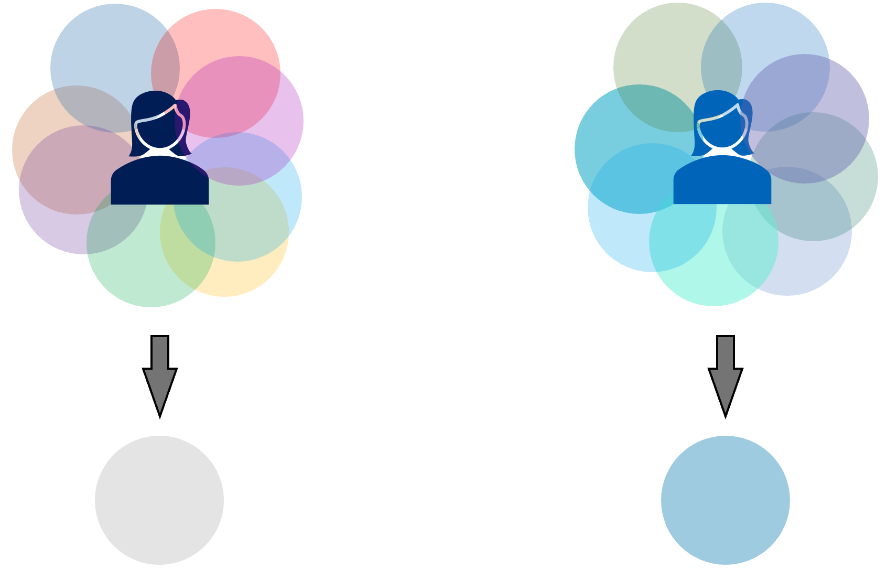
Figure 10.1. The benefits and perils of exploration versus focus. Each differently-colored disk represents engagement in a different community/group. Jenny’s differently-colored disks indicate her engagement with diverse communities. The disks representing the communities that Jane participates in, are all in shades of blue to indicate her preference for channeling all her engagements through her church. In Jenny’s case, the sum of the colors of her communities will be close to white, i.e. colorless (as in the sum of all the colors in the visible spectrum). This is indicated by the light gray disk in the figure. For Jane, the sum of the colors of her communities is blue (represented by the lower blue disk), so if a red-blue axis of polarization emerges, Jane will identify strongly with the blue camp, making her polarization less open to change.
Jane’s experiences will provide her with a grounded life. But precisely because these experiences are tethered to a particular community and perspective, they also create an inherent bias in her worldview. In itself, Jane’s bias is not bad or wrong. But if it happens to align with an axis of polarization, bias becomes identity (what defines a polarized camp). And identities are much less open to discussion and change. Figure 10.1 illustrates this point schematically. I see a concrete version of this scenario when I visit Iran. Indiscriminate sanctions and arduous visa requirements are limiting many Iranians’ experience of the West to negative reports on state media (see Box 4.1). As a result, the economic sanctions on Iran are – unexpectedly – entrenching a visceral rejection of the West in a subset of Iranians.
In the above example, I used Jane’s religion as the anchor that tethers her worldview, but the anchor could just as easily be political activism, environmentalism, civil rights, country-of-origin, ivory-tower academia, a military family, etc. In all such scenarios, greater diversity of interactions is not a cure in itself, but can facilitate other efforts to reduce polarization.
10.4 Break Up Sorting, Segregation, and Compartmentalization
We have seen that spatial segregation, and people sorting into “likeminded” groups, can happen naturally because we all tend to relate more easily to others like ourselves. Businesses and other complex Human Systems are also often divided into organizational compartments (groups, divisions, departments, etc.) to facilitate management and increase operational efficiency.
Some compartments within communities can be useful 90. For example, ethnic neighborhoods in a city provide supportive environments for minorities, and cultural variety for the city. But compartments also act to exclude, sometimes implicitly, as in ethnic neighborhoods, and sometimes explicitly, as in clubs, private schools, and retirement communities.
By limiting interactions across social divides, compartments can become powerful amplifiers of misconceptions and biases that lead to discrimination, othering, and inequality. They also limit people’s access to alternative viewpoints. People in isolated compartments are like the six blind men who each feel a different part of an elephant (trunk, tusk, leg, ear, tail, and side), and come to dramatically different conclusions about what elephants look like. Figure 10.2 provides a visual example of how not seeing the whole picture can mislead.
Another issue is that, when people compartmentalize into exclusive groups, they often end up behaving differently from their individual preferences. For example, compartments can lead to groupthink 91, whereby a desire for harmony leads to bad group decisions. The Abilene paradox 26 is a particular form of groupthink, in which a group does something that the majority disagree with, because everyone thinks it is what the others want. A related, but different phenomenon is Choice Shift (sometimes called Group Shift), where people as a group adopt more/less extreme positions than they would as individuals 27.
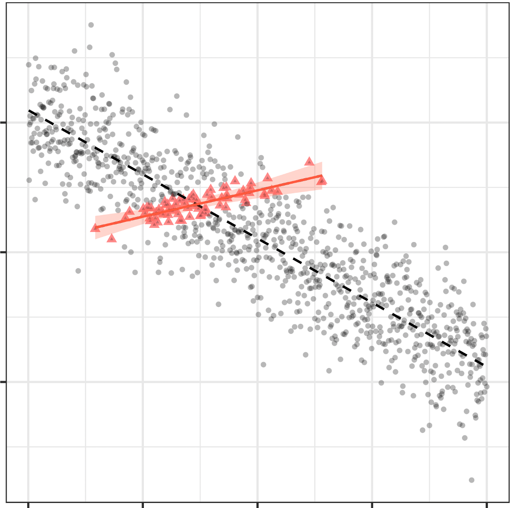
Figure 10.2. Not seeing the whole picture can mislead. Gray disks show the distribution of measurements of a hypothetical downward-sloping variable (dashed black line shows the overall trend). The red triangles highlight a subset of the data. The red solid line shows the upward trend line for this subset. Looking only at this subset of the data would mislead us about the overall pattern.
Compartments are natural and often-useful constructs. We can’t “outlaw” them. But we do need to be on the lookout for their potential adverse effects. As with most things involving humans, there is no single, perfect way of avoiding social compartments occasionally producing undesirable outcomes. If you want a beautiful garden, you have to get out in the garden regularly and deal with weeds, parasites, soil imbalances, etc. as they arise. Likewise, to avoid compartmentalization leading to bad decisions and RAP, we have to continually monitor, evaluate, and intervene as necessary.
10.5 Build Bridges
Imagine a community divided into four clusters based on their views/feelings about two issues. In the example in Figure 10.3A, people in clusters on the same side (left, right, top, bottom), agree about one of the two issues and disagree on the second issue.
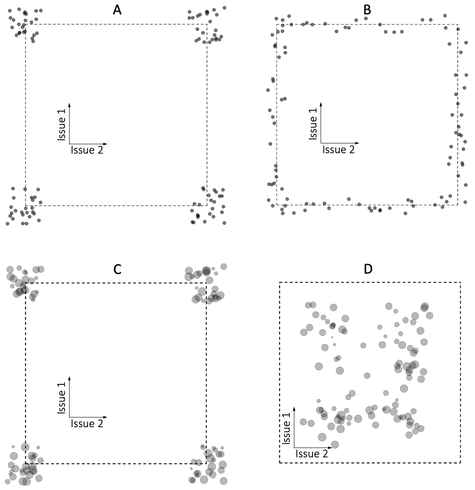
Figure 10.3. Building bridges across polarized communities. Panel A shows a community divided into four clusters (opinion camps) based on where individuals stand with respect to two issues (inset axes). Each disk represents an individual. Dashed lines provide a reference frame across the panels. Panel B schematically illustrates how bringing people together based on shared values in one of the two polarizing dimensions cannot fill the middle ground. In this simulation, each time two people interact, they each take a small step to harmonize their views in all dimensions. Repeated interactions move people who agree on one issue to move toward the center on the second issue. However, because people on opposite corners in the figure have no shared values, they do not interact and do not move toward the middle. The center-ground remains empty. Panel C is similar to A, but here disk sizes indicate the stance of community members on a third issue that is not correlated with Issue 1 or Issue 2. In D, we see the effect of bringing people with similar views in this third dimension together. The process is similar to that in Panel B. But in this setting, there are interactions along the diagonals as well as along the left-right and top-down edges.
One approach to reducing polarization would be to use the issue(s) that people agree about as bridges that bring them together as cooperators. The idea is that once people are interacting with each other in an open and respectful way, their views on issues they don’t agree about are likely to moderate in order to accommodate their new-found friends. But, as shown in Figure 10.3B, this approach still leaves the middle-ground empty. The reason is that people occupying opposite corners of panel A disagree on both issues, and so have no common values to bring them together.
An easy way to overcome the hollow-middle problem in Figure 10.3B is to build bridges using commonalities in a third dimension, i.e. an issue that is not the cause of polarization and not correlated with the polarizing issues. In Figure 10.3C, I have indicated the values of one such dimension using the sizes of the disks representing individuals. Figure 10.3D shows an example simulation result, in which people from different corners of Figure 10.3A are paired together based on their similarity in the third dimension. At each step of the simulation, paired participants modify their issue stances to take a very small step towards each other. Over time, everybody moves toward the middle ground.
For a couple of years when I was an undergraduate, I rode a motorbike that I loved because it looked and sounded like Steve McQueen’s bike in the Great Escape. The bike was a mechanical nightmare, but the regular breakdowns came with a revelation for me. Other bikers going past would stop and offer their help. In the process, I discovered that many scary-looking bikers were actually really nice people who happened to occupy a part of society I had subconsciously avoided. My motor bike turned out to be a bridge that connected me to a whole British subculture that I came to value.
In practice, the lesson I learned translates into a very simple dictum: Dedicate a portion of your time to doing something very “unlike” you, something usually associated with people who are not like you. The activity should be ongoing and long-term, so you get to know and appreciate your new circle. Or if you are an activist, nurture cross-cutting communal activities.
10.6 De-correlate Aligned Issues
We sometimes lump things together in ways that are helpful in one context but counter-productive in another. For example, pollution and climate-change can be grouped together as by-products of consumerism. Lumping these two issues together can be helpful in a discussion of consumerism. But consumerism is not the only cause of climate change or pollution 28,29. As a result, people’s views about the two issues are often not strongly correlated. In situations like this, single-issue campaigns can engage many more people. Also, while separating the issues and addressing them individually, parallel campaigns can take advantage of their shared aspects to grow more rapidly.
Of course, many forms of RAP are interdependent (e.g. wealth and politics). Addressing only one aspect of a multi-faceted RAP (e.g. reforming policing to reduce racism) will only provide temporary and partial relief. So I am not proposing focusing on just a single issue, but instead to launch multiple, parallel, single-focus campaigns. Each campaign can benefit from a broader support base, while chip-ping-away at different parts of the foundations of the bigger challenge.
10.7 Make Belonging Less Dependent on Identity
Our social identities (racial, work, cultural, class, sexual, political, etc.) are multi-faceted, context-dependent, and fluid 92, changing as we age, migrate, switch jobs, etc. And of course, most people are constantly switching among many identities daily (e.g. mother, historian, Scottish Nationalist, feminist, etc.). These identities provide us with a sense of belonging and purpose, and promote resilience against life’s ups and downs 30. The desire to belong is a natural human trait, and not bad in itself 31. But it gives our attachment to identity a strong emotional component 32,33, which means that we sometimes sacrifice truth, fairness, and the greater social good in favor of belonging and solidarity 93.
As with sorting and segregation, belonging and identity are organic aspects of Human Systems that we neither can, nor would want to prohibit. Rather, we need to constantly monitor and reshape our identities to avoid situations in which they feed and amplify RAP. One way to do that is to nurture a sense of belonging to multiple and diverse communities, so that belonging to any one community is only a small part of who we are as a whole.
10.8 Tease Apart Emotional, Ideological, and Pragmatic Motives
Our actions and behaviors are typically driven by a mix of emotions (passion, hope, fear, anxiety), ideologies (beliefs and values), and pragmatic considerations (not letting perfect become the enemy of good). These motivators each create different blind-spots, and respond to very different types of engagement and intervention. This is a topic that we all have personal experience of, and it is discussed extensively elsewhere 34–37, so I will only mention it briefly here in terms of its relation to countering RAP.
Feelings cannot be assuaged with cold, logical discourse, and emotions don’t settle ideological debates 94. When there is emotional polarization, winning becomes more important than being right or fair, or even achieving a helpful outcome. Empathy, validation, and finding common-stories/aspirations are much more likely to help in dealing with emotions than, say, logical arguments. On the other hand, the best way to engage with polarized beliefs and values is to start with shared values and then debate issues from a position of mutual respect. Finally, decisions based on pragmatic motives are easy to change if you can offer a more “cost-effective” alternative.
10.9 Fight Monopolies
If you search the internet using Google, shop at Amazon, socialize on Facebook, listen to music on Spotify, buy concert tickets from Ticketmaster, etc., you will already be conscious of how these services have become so dominant that they are in-effect monopolies 95, the end-points of Runaway Polarization.
The trouble with monopolies is that, no matter how hard they try to broaden their ecosystems (think of all the ways in which Facebook tries to be a one-stop platform for all your online needs), their visions, histories, technologies, company cultures, etc. limit them to a particular universe of possibilities 96. How your search results are ranked, what shows up in your news feed, even the length of the songs you listen to are shaped by these services. Ultimately, the offerings of monopolies are more like Jane’s world (monochromatic) than Jenny’s world (kaleidoscopic). As the No Free Lunch Theorem 38 dictates, nobody can be really good at everything.
In short, monopolies trap us into experiencing the world through a particular lens, facilitating biases that drive polarization. This effect is particularly strong in terms of news media consolidation 39,40, which is particularly concerning given news media’s critical role in informing our opinions 41.
10.10 Build Trust
All of the above approaches to countering RAP can be rolled into a single call for us all to interact more often, more meaningfully, and more diversely. To fight RAP, to bridge the gap between “Us” and “Them”, we need to replace competition and mutual inhibition with cooperation. In turn, to enable cooperation we need to build trust. The kind of trust needed is limited and specific. We only need to be able to trust each other’s abilities and promises. The Scottish philosopher and economist David Hume first made this distinction in 1740:
Your corn is ripe to-day, mine will be so to-morrow. “Tis profitable for us both, that I shou’d labour with you to-day, and that you shou’d aid me to-morrow. I have no kindness for you, and know you have as little for me.[…] Here then I leave you to labour alone; you treat me in the same manner. The seasons change, and both of us lose our harvests for want of mutual confidence and security. 97
We put our faith in this kind of trust every time we drive, especially in a busy city like Seattle. Say we pass 100 other cars every mile we drive. In that case, someone who drives 10,000 miles a year passes within collision distance of a million other drivers during the year. And yet, most of us, most of the time, get through multiple years without a collision. Why? Because we generally follow traffic laws and conventions. People who don’t, get honked at, fined, lose their licenses, or ordered to attend driver-education classes.
A quarter century ago, in his breakthrough book, “Bowling Alone” 42, the Harvard political scientist Robert Putnam noted a sharp, multi-decade decline in Americans’ active, face-to-face participation in civic and social organizations (everything from the Scouts, to bowling teams). The accompanying loss of social capital, he said, had reduced our capacity for “getting by” and “getting head” in the world. Putnam emphasized that many factors, ranging from television to urban sprawl, the pressures of time and money, and increasingly individualized electronic media contributed to the decline in the kinds of interaction that build community.
There are some exceptions to Putnam’s findings. Book clubs and multi-player video games, for instance, are flourishing 98. But the decline in social trust that Putnam first identified in 1995 43 continue today 99. In his 2013 book, “We are the Ones We Have Been Waiting For” 44, the Tufts political scientist Peter Levine points out that, while in 1964 more than half of all Americans said they generally trusted other people, by 2010 the proportion had fallen to less than one third. In line with Putnam, Levine argues that
[o]ur motivation to engage has not weakened, but we have lost institutionalized structures that recruit, educate, and permit us to engage effectively.
By definition, societal polarization involves people growing apart from each other in some respect. Growing apart is a lot more likely when we don’t trust each other. At the same time, we need trust to have the kinds of exchanges that bring us together. So, how do we stop this self-reinforcing feedback loop eroding our mutual trust?
Peter Levine suggests that we have lost the knack of hearing each other out. “It is almost always easier”, he says, “to exit from a discussion that includes diverse perspectives than to listen and speak with others who are different. When a heterogenous discussion sounds like a “battleground”, and a homogeneous discussion sounds like “home”, people will do their best to avoid controversy.”
Writing a year before Levine’s book, the sociologist Richard Sennett was likewise concerned: 37
A distinctive character is emerging in modern society, the person who can’t manage demanding, complex forms of social engagement, and so withdraws.
In Sennett’s view 100,
cooperating with people you don’t know, or people you don’t like even, people who are different
doesn’t come naturally,
that complex kind of cooperation has to be learned.
With traditional trust-building civic institutions in decline, and people choosing to disengage, how do we go about engaging with people who are not like us?
Sennett suggests we should come together to repair and re-vitalize the old civic organizations, or to create new versions of the old organizations. It is a clever “two for the price of one” strategy. We can build social capital and trust while also repairing and building institutions that will facilitate further trust-building. But where and how do we get started?
In his recent book “Tribal” 36, the Columbia cultural psychologist Michael Morriss offers a set of tools and a strategy for building communities. Morris argues that the greatest evolutionary advantage of Homo Sapiens’ big brains is that we can cooperate in more complex ways and in larger groups. Our brains are pre-wired for us to learn from each other, and we do this learning in three different ways. First, we have an urge to fit in with our peers. Second, we want our peers to value and respect us. So, we strive to be heroes, and to be more like our heroes. Third, we value our tribes’ achievements, and follow the ways of our ancestors when we can. These three evolutionary traits sometimes lead us to ugly tribal identities, as in the Third Reich. But we can also exploit the same instincts to bring people together and create new communities.
I got a personal introduction to this approach in the 1990s, while I lived on the outskirts of London, and occasionally volunteered at a nearby residential hospital for people with severe mental and physical handicaps. I had been invited to “volunteer”, not because of anything I could do for the clients, but as a sort of community outreach, to help the local community get to know and appreciate their work 101.
The clients at the hospital had spent entire lifetimes getting physically and emotionally hurt. They were often fearful of others. At the same time, their mental handicaps limited their ability to heal themselves. The breakthrough that the therapists hoped for, the first-step that enabled all the subsequent healing work, was trust-building. It was often the hardest step because it was like searching blindfolded for a buried treasure in unknown territory.
Day-in, day-out, the team would engage individual residents in drawing/painting, making music, storytelling, playing games, or just sitting together. They intentionally varied their interactions, and picked up on what interested and opened-up their clients. Occasionally, there would be a breakthrough. After weeks, months, or years, a client might take the initiative to start an interaction, smile at a therapist, hold an outstretched hand, or react to some game/art/music in a way that opened avenues for further explorations.
Building trust starts with searching for a common ground, which can be a shared value, a shared hero, or a shared piece of memory/history/tradition 36. In itself, the common ground – something that both parties appreciate – is often not that important; it is just the place where two near-strangers meet; where a conversation can begin. If you are at a football game, it is easy to guess what that might be. If you are a therapist trying to connect with a severely mentally handicapped client, the search is much harder. It could be a song that the client likes, it could be a game that takes the client back to the times before their handicaps overwhelmed them, or it could just be the experience of working towards a shared goal (build sand-castles, feed the birds) with someone that they gradually learn to relax with.
Irrespective of who is involved, the process of building trust involves a few archetypal actions: finding common values, creating a mutually-supportive peer network, identifying shared heroes or role models to aspire to, and finding inspiration in shared traditions, histories, and ceremonies. In essence, the process is tribe-building. But instead of the rigid, all-consuming, “Us versus Them” kind of tribe, the goal here is to build fluid cooperations, where an individual can be a member of many tribes. The more, the better, because the sum of many overlapping tribes is not a society of competing identities, but rather a collection of highly-connected, mutually-trusting, yet highly diverse individuals.
Balance the Short-Term and the Long-Term
Imagine turning a corner on a mountain trail and finding yourself between a mother bear and her cubs. That moment is not a good time to reflect on how humans have encroached on wildlife habitats. Sure, it is a worthy thought. But you need to get yourself out of harm’s way first, before you can usefully think about the long-term consequences of how we live. To survive, we need good short-term strategies (what to do when in the way of a mother bear), and also effective long-term strategies (how to reduce surprise bear-encounters in future).
One of the biggest challenges in setting up long-term projects is that we can’t be sure how well our efforts will pay off. As the old Danish proverb goes “it is difficult to predict, especially the future”. So, how much of our current effort should we invest toward long-term goals?
The question is trickier than it may seem. The more unpredictable the future, the more we have to discount the benefits of long-term plans. But the less resources we commit to shaping our future, the more uncertain it will be, creating a self-fulfilling feedback loop. Sooner or later, urgent issues (disasters, unexpected bear-encounters, etc.) will force us to think short-term. And if we are not able to resolve our short-term needs quickly, we end up spending less effort on long-term planning, which makes our futures less predictable, which leaves us trapped in short-term thinking. The social philosopher Roman Krznaric calls this the “tyranny of the present”. In his book Good Ancestors 45, Krznaric makes the case that long-term thinking should be our default mode of action. The strategy can be implemented in a very simple and pragmatic manner. We only switch to short-term thinking when we really need to, and switch back to thinking long-term as soon as we can. It may be easier said than done, but it is a strategy well worth pursuing.
10.11 Detect RAP Early
Imagine a new polarizing mechanism gradually taking hold in a setting we care about. Recall that positive feedback loops create dynamics akin to a ball rolling down a hill. If we can detect a positive feedback loop early on (before the ball has rolled far down), we can reverse the process much more easily than after the feedback loop is established (with the ball at the bottom of the valley, a long way from the top). So, is there a way to detect a nascent positive feedback loop?
If we can obtain data on the time course of a system’s early evolution (e.g. the market-size or net worth of a company) and build a trajectory curve with data at multiple timepoints, then positive feedback loops have two characteristics that we can look for.
As illustrated in Figure 10.4, the outputs of systems with RAP-inducing feedback loops tend to have a two-phase growth curve. They grow sluggishly at the beginning, and then take off with explosive growth. Stronger RAP is accompanied by a longer initial sluggish growth period, and sharper later growth. What happens in later phases of development varies. In Human Systems, growth may saturate and slow down temporarily, and then pick up again when people find a way to overcome obstacles to growth. The important features here are the sluggish initial growth, followed by an accelerating rapid growth phase 102.
We saw in Chapter 2 that compounding balances in savings accounts with different interest rates grow exponentially apart. In settings where we have time course data for multiple entities, we can use increasing relative differences among the entities as another tell-tale sign of the kind of positive feedback that leads to RAP.
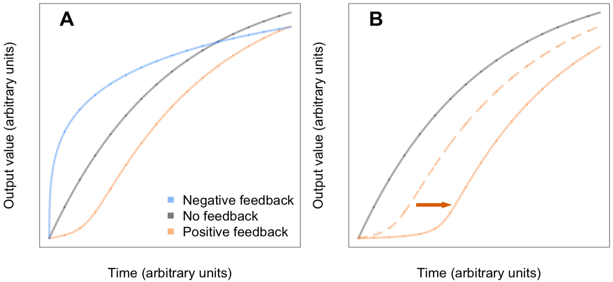
Figure 10.4. Characteristic shapes of the time course responses of systems with feedback. A. Example trajectories of positive, negative and no feedback systems evolving to the same steady state value. The gray curve shows the response of a system with no feedback to a step-input and highlights the effect of saturation, without which it would be a straight line. Systems with negative feedback have a faster initial response, and then saturate and decelerate. In contrast, systems with positive feedback have a sluggish start, followed by an accelerating-response phase until they saturate or reach their maximum value. B. A more nonlinear feedback rate (sharper RAP) leads to a more sluggish start and faster later response. The dashed ochre curve is the same as the ochre curve in panel A. The solid ochre curve shows the system trajectory under stronger RAP. The gray curve is identical in the two panels.
As a real-life example of positive feedback at work, Figure 10.5 shows the financial profile of Google in its earliest years. Note that all three indicators plotted have the characteristic slow start followed by ever-accelerating growth (analogous to the early portions of the ochre curves in Figure 10.4). The data are from David Vise’s 2005 book “The Google Story” 103, where Vise also points out that:
The company has reinvested substantial amounts of money to build the biggest and fastest computer network of its kind.
The emphasis on “reinvested” is mine to highlight the positive feedback loop in play (more earnings, more investment). There are many more such examples of feedback throughout Vise’s book. Here is an example of Google extending its positive feedback loop beyond its initial purview:
about half of Google’s sales comes from Web sites of affiliates.
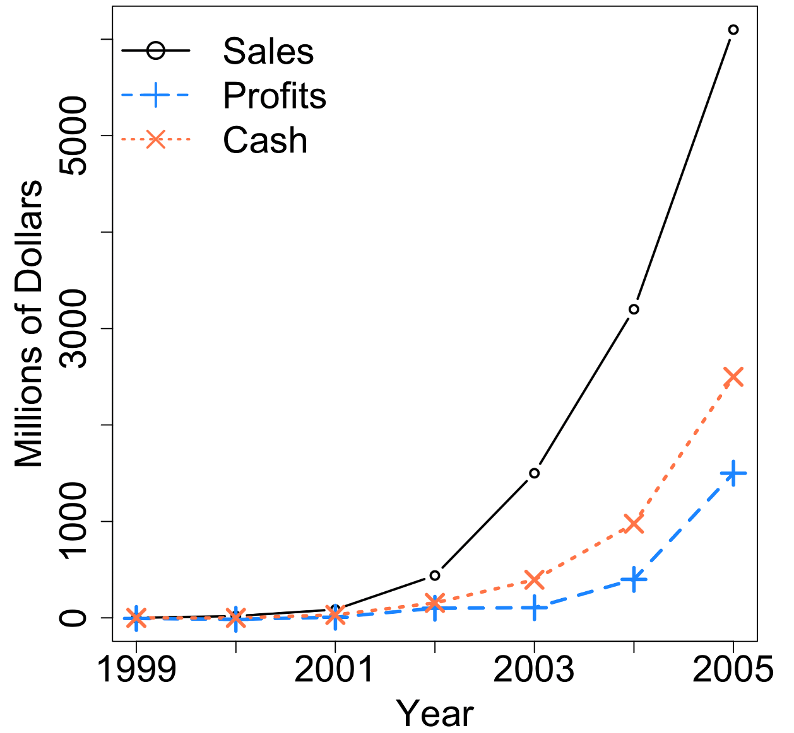
Figure 10.5. Financial profile of Google in its early years.
The above approach infers positive feedback on the basis of the system’s performance over time. If we have data on the set of interactions that we think are creating positive feedback loops, we can also infer the feedback loops by analyzing the system’s interaction network. There are many algorithms available for detecting interaction loops in networks. Once we find such loops, we have to verify that the circular sequence of interactions has a positive, self-reinforcing sense (as opposed to an inhibitory sense, which would indicate a negative feedback loop).
As we saw in Chapter 7, there are a great many cycles in large, highly-connected networks. Which feedback loops have the greatest impact on the behavior of such networks? There is no simple answer. But, as we will see in the next section, feedback loops that include or directly interact with network hubs often have big impacts.
Another way in which some feedback loops can have greater impact than others is when they affect cliques that include key decision makers. By definition, social cliques involve large numbers of interactions among their members. As a result, they usually include many overlapping self-reinforcing loops. Many methods are available to identify potential cliques and echo-chambers within larger interaction networks such as social networks 104. The most direct approach is to look for sub-networks with unusually high connectivity among the network nodes, as illustrated in Figure 10.6. Algorithms vary in terms of their exact definitions of communities. As a result, nodes with inter-community interactions are often grouped differently by different methods. But broadly speaking most methods find similar clusters. Once, we have identified clusters that include network nodes of interest (e.g. think tanks, lobbying groups, officials), we can look for evidence of self-reinforcing interactions within the identified cliques.
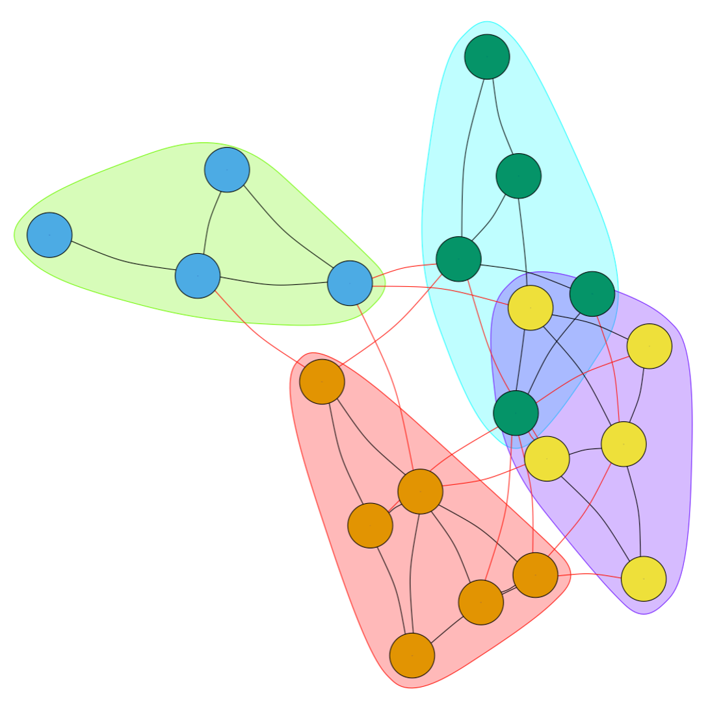
Figure 10.6. Community detection by network connectivity clustering. Shaded backgrounds indicate automatically detected communities, where the members are more strongly connected to each other than to members of other communities. Within-community interactions are shown as black lines. Inter-community interactions are shown in red. Nodes in each community are colored differently to highlight the communities.
10.12 Break Up the Feedback Loops That Drive RAP
We saw in Figure 3.5 that as long as the underlying feedback loops causing RAP remain in place, they will invariably (re-)create exponentially increasing differences among those affected, regardless of any temporary interventions. For this reason, breaking up (or disabling) the positive feedback loops driving RAP is vital to countering RAP in the long term.
In contrast to the simple, illustrative examples I have used throughout this book, real-life systems are often regulated by, not just one or two, but many overlapping and mutually-reinforcing feedback loops. Feedback systems with multiple alternate paths will overwhelm and wipe out the effects of any interventions that do not counter or remove all the feedback loops.
The heterogeneous nature of the feedback loops that drive RAP in real life means that they are often difficult to counter through top-down, centralized efforts because such measures would need to account for all the different local contexts in which the feedbacks operate. For this reason, multi-pronged initiatives that use local knowledge, expertise, and connections are more likely to be effective. The examples in Figures 10.7 – 10.9 illustrate this point schematically.
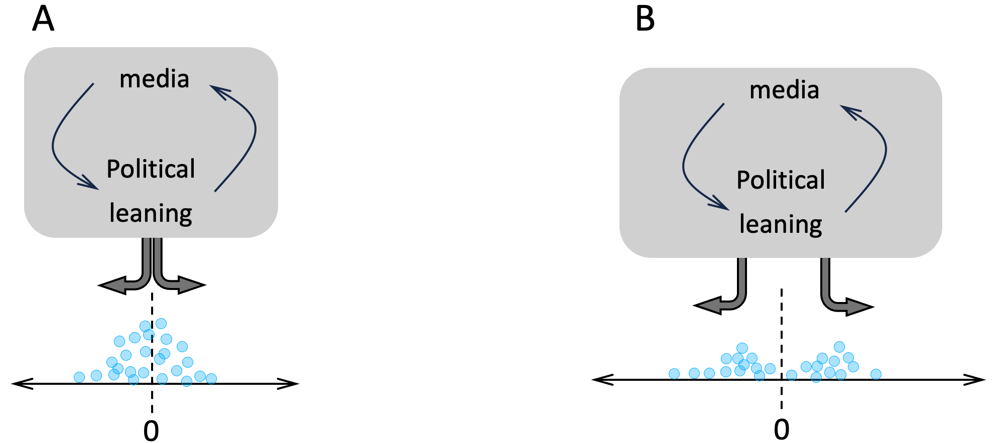
Figure 10.7. A cartoon model of the role of media in political polarization (loosely based on the findings reported in 46). Panel A shows the initial political leanings (horizontal axis) among a group of people (blue disks) subject to a self-reinforcing (positive) feedback loop via news/social media: people further from the center (dashed vertical line) receive a greater amount of polarizing input from their media sources. Panel B shows the distribution of the political leanings after some time has passed.
For the sake of legibility, the cartoons in Figure 10.7 omit many interactions and feedback loops. To allow for more detail, Figure 10.8, shows just one half of the population in Figure 10.5B (for example, the subset of people moving to the right). In this more detailed view, instead of the earlier generic item “media”, we see three distinct media sources (numbered 1 to 3), each influencing a subset of the target population (and in-return benefiting from their subscriptions). The individuals within the community are shown to divide into subgroups (shaded boxes), which interact with and influence each other and the media in distinct ways. Since this figure only shows one side of the population in Figure 10.7B, we can assume that all the influences are positive, so chains of same-direction arrows that form loops are positive feedback loops.
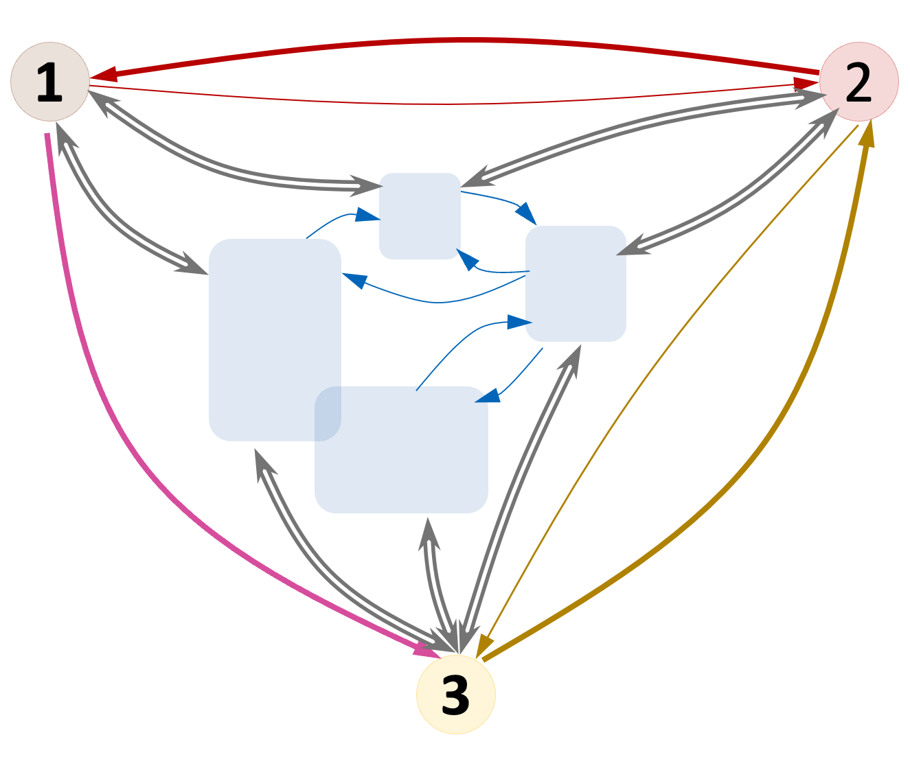
Figure 10.8. Example network of influences among four sub-communities (shaded rectangles) and three influencer entities (media companies, numbered disks). Arrows indicate the direction of influence. Note the existence of feedbacks among some media sources (they could be part of a business group or business deal). The sub-communities could be families, business groups, etc. They are different sizes and heterogeneous in terms of their interactions with each other and with the media sources.
In Figure 10.9A, I have zoomed-in further, and focused on the interactions among the members of just one of the community subgroups shown in Figure 10.8 (media feedbacks are not shown for simplicity). To suppress RAP in these more complicated settings, it is usually necessary to intervene at multiple points. In the example in Figure 10.9B, blocking the activity of the community member who influences the largest number of her peers (gray disk) has little effect (hatched disks) on the community as a whole. But if we simultaneously remove the second most-influential community member, we stop polarization for everyone in the community (Figure 10.9C).
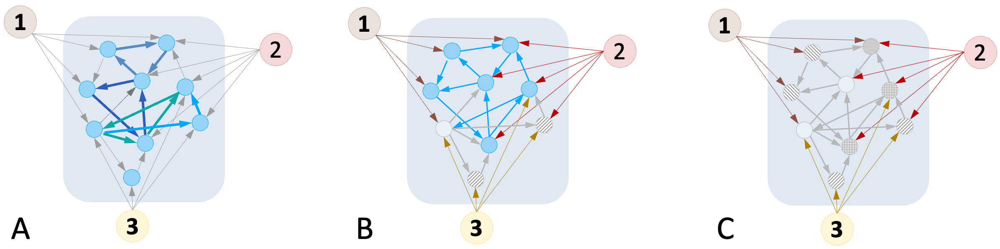
Figure 10.9. The need for distributed, local action to counter polarizing feedback loops. Panel A shows the network of influencers (numbered disks) driving a hypothetical community subgroup (colored background) to a polarized state. The community members are shown as blue disks (network nodes). The influences they exert on each other are indicated by arrows. Three self-reinforcing feedback loops are highlighted (colored, thick arrows). Suppose that sustained node activity requires both external and peer-group influences. Panel B shows that inhibiting only one of the community members (gray node) counters polarization in only two others (hatched nodes). In Panel C, inhibiting the influence of an additional community member results in a cascade of inhibitions (differently hatched nodes) that ultimately blocks all polarization.
10.13 Reframe Amplifiers and Influencers
We can’t really counter RAP without disabling the self-reinforcing feedback loops that drive polarization. However, in real-life, completely demolishing a feedback loop may be too costly/difficult. In such situations, we can dramatically reduce the polarizing power of a feedback loop by inhibiting the effectiveness of those who provide activating inputs to the loop, and those who amplify the downstream effects of the feedback loop.
Influencers and message-amplifiers are often embedded inside positive feedback loops. But influencers can also act upstream of a feedback loop, acting as the initial trigger. Amplifiers, on the other hand, sometimes act downstream of feedback loops, acting to spread a message more widely and/or increase its effectiveness. In all events, to counter RAP effectively we need to identify who the influencers and amplifiers are, and then reduce their effectiveness (e.g. by winning them over, countering their narratives, offering alternatives, etc.).
Influencers and message-amplifiers are sometimes easy to spot in networks because of the large number of outgoing connections they have to others. In other cases, they can be embedded in networks of interactions that are large in scale and complex in structure. Luckily, because so much of today’s commercial activity is internet-based, many sophisticated concepts and tools have been developed to identify and maximize ways of influencing online opinions and decisions. Many specialist books and courses deal with the topic in far more detail than would be appropriate here 105. Instead, I provide a (very) brief overview of some key considerations below.
Human interaction networks can represent many different kinds of interactions (who trades with whom, where people get their news and entertainment, social networks, discussion forums, online courses and learning communities, etc.). Within any of these networks, people play distinct roles. Some people are primarily consumers, others act primarily as disseminators (e.g. reporters, politicians, religious leaders, public intellectuals, infection super-spreaders). People’s roles change over time, or depending on the occasion (e.g. a sports person can also be a viewer, a commentator, a referee, a coach, etc.). And even an interaction of the same type between the same people can be more or less impactful in different settings.
As a concrete example, imagine trying to identify gossip feedback loops among the residents of a small village. Figure 10.10 shows an example interaction network. The nodes (disks) represent the villagers, and the arrows represent how a particular piece of gossip was passed on from one person to another 106.
The first thing to note is that the interaction network for the same people on another occasion would likely look quite different, highlighting the importance of capturing the right information. Second, note how the village members fall into two distinct communities. The existence of this sort of structure in the network means that to find the biggest influencer(s), we have to take the structure of the network into account.
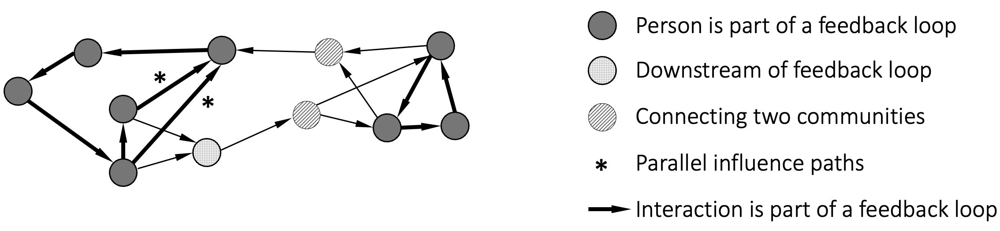
Figure 10.10. Network diagram of gossip transmission in a hypothetical village.
In the context of this particular example, there are no “super-influencers” simultaneously broadcasting to (nearly) everybody in the village, nor are there any “serial-superspreaders” sequentially talking to most villagers. Instead, we have two highly-interacting communities in the network, connected by two people who act as inter-community “bridges” (hatched disks).
Each of the communities in our example village includes a self-reinforcing positive feedback loop (see thick arrows). As a result, a piece of gossip that starts in either community will be reinforced and can become persistent. However, for gossip to spread to the whole village, it must be passed between the two communities by one of the two people (hatched nodes) who act as bridges between the two communities. Conversely, the two people acting as community bridges could be tapped to spread important news to the whole village.
Community-bridges aren’t always the optimal choice for interventions. In the above example, neither the bridges, nor any members of the small, right-hand community would be optimal if, instead of wanting to reach every village member, we wanted to reach the largest number of people in the shortest time-interval.
Another thing to note is that, in the above example, the spread of gossip and its persistence are mediated by different mechanisms. The self-reinforcing feedback loops that enable gossip to persist, initially act only locally. A rumor that has become persistent via either of the two loops, can only spread to the whole village via the community-bridges. Contrast this scenario with a situation in which a rumor is broadcast to everyone in the village, and subsequently becomes persistent by activating the two feedback loops in the network. Although the outcome is the same for both scenarios, stopping the rumor from becoming persistent calls for a different strategy in each case.
In the situation where self-reinforcing feedback loops become activated before a rumor spreads through the network, blocking the feedback loops can also stop the spread of the rumor. Alternatively, if feedback loops are only locked-on after the rumor has spread through the network, blocking the influencers who spread the message will also stop the rumor from becoming persistent.
I mentioned above that an influencer (e.g. a media source, or a political leader) could initiate a rumor by broadcasting to all or most of the network. By acting upstream of the network, such influencers can take advantage of the village’s message-spreading and self-reinforcing interactions to maximize their impact. In the above example, broadcasting to all of the villagers will get the same result as activating the feedback loops. The best influencers exploit the interactions among their targets to create persistent messages that spread far beyond the initial recipients. So, when looking for the biggest influencers, beware that they may not be the ones with the largest number of direct followers.
One final point to note in the above example is how the positive feedback loop in the left-hand community actually takes two overlapping paths (see * signs). I included this feature in the above example to emphasize that to break a feedback loop, we have to break all the parallel paths involved. Removing just one of the two marked interactions would likely have little effect.
10.14 Counter Self-Reinforcing Echo-Chamber Dynamics
Echo-chambers are typically sub-networks with many overlapping and alternate/redundant positive feedback loops. If there are hubs within an echo-chamber network, removing these hub nodes is often the easiest way to block information flow within the echo-chamber. However, the network hubs with the biggest effect are not always the biggest or most obvious hubs in a network. Sometimes, they are key nodes within the feedback loop(s) that create the echo-chamber, or they can be upstream of the echo chamber, as discussed above. For example, while a celebrity or politician may be the figurehead of a polarizing movement, the hubs and feedback loops that support and enable such a figurehead may instead be media organizations/professionals or funder/activist groups or thinktanks that operate away from the limelight.
In situations where neutralizing all the overlapping feedback paths in an echo-chamber is not feasible/cost-effective, combinations of otherwise minor interventions can still be an effective means of abrogating RAP. Human Systems tend to evolve over time to be robust to the kinds of perturbations that happen often, and sensitive to perturbations that are relatively rare 47. Using this insight, it is often possible to change the behavior of a system by triggering two or more simple perturbations that are not expected to occur together.
The effectiveness of this strategy is supported by data on how systems fail. In a series of case-studies presented in the book “Normal Accidents” (Basic Books, 1984), the Yale sociologist Charles Perrow shows that even systems with many backups and other redundancies (e.g. the three-mile island nuclear reactor) can fail as a result of two or more events that co-occur and interact with each other in unexpected ways.
Multi-point, targeted interventions can be a very effective way to inhibit undesirable network dynamics. But what if we don’t understand a system well enough to know what combination of perturbations it may be sensitive to?
In the absence of resources to characterize the network of interactions in a RAP-driven system, or in situations where directly influencing such a system is not feasible, simply changing the behavior of network hubs (those who interact with and influence many others) can produce notable effects. See Figure 10.11 for an illustrative example. However, note that depending on how the nodes (individual entities) in a network respond to the information they receive from their connections, this type of ‘blind’ intervention can sometimes have unexpected effects and so should ideally be carried out in small, watchful increments.
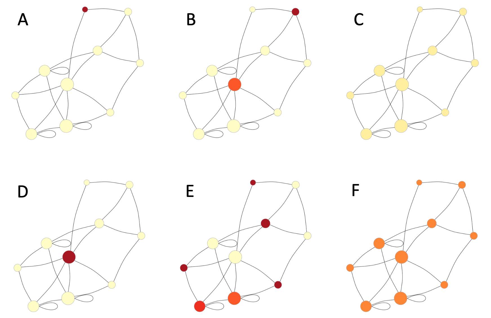
Figure 10.11. Perturbing a network hub tends to have a much bigger effect on the network than perturbing nodes with fewer connections. Shown is a small example of a small-world network. The node sizes are proportional to the number of connections per node to make it easier to spot the biggest network hub. The node color intensities are proportional to the node’s activity-level/value. Following a perturbation, each node iteratively changes its value to represent the average of its neighbors’ values. In the top row, the node with the fewest connections is perturbed at start (panel A). Panel B shows the network state after 2 rounds of updating each node value. Panel C shows the final (steady) state of the network. The lower row shows the same network, but in this case (panel D), the biggest hub is perturbed by the same amount as in panel A. Panels E and F show the network state at the same time points as in (B, C). As expected, perturbing the hub has a much larger effect on the network as a whole.
Even in extreme situations when we have limited means of action and very little information about the system of interest, often we can still modify the system’s behavior by delivering small perturbations to a random but large proportion of the network members.
In Figure 10.12, I have taken the same network as in the preceding example, but instead of perturbing just the biggest hub, I perturbed five randomly-chosen nodes by an amount just one-fifth of the perturbations I used in Figure 10.11 107. Although the magnitudes of the perturbations I applied were quite small, cumulatively their effect on the network’s steady state is comparable to that in Figure 10.11F, a testament to the power of many weak ties 48.
Note that controlling the exact behavior of a dynamical system through small perturbations 49 is much harder than simply changing the system’s behavior, which is our goal here. There is considerable evidence that the weak effects of social peer norms can change people’s behavior much more effectively than sharp factual corrections 50. So, this distributed approach may be especially effective in human networks.
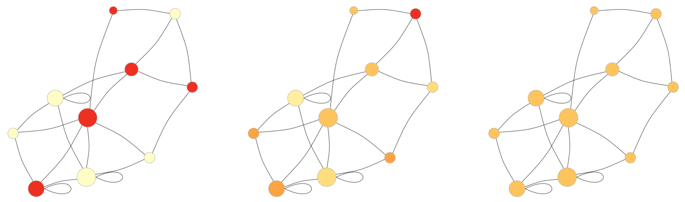
Figure 10.12. Example of using many small perturbations to change the overall state of a network. The network model and time-points shown are the same as in the previous figure. But instead of perturbing just one node, here five nodes are perturbed at one-fifth of the magnitude of perturbation used in the previous figure.
One of the biggest challenges facing attempts to counter RAP is that the systems of interest are often subject to a great many interacting stabilizing and change-reinforcing feedback loops. Interactions among feedback loops can create complex dependencies such that it becomes very difficult to predict the effect of interventions. Because of such potential confounding effects, instead of big, sudden, dramatic moves to counter RAP, it is best to take small steps, evaluate the results, and then determine our next step (see Box 10.2 for more detail); in a manner similar to a physician carefully monitoring how a patient responds to off-label use of a drug.
10.15 Build New Positive and Negative Feedback Loops
In situations where we can’t inhibit the feedback loops that drive RAP, an alternative is to modulate the system behavior by adding additional feedback loops to the mix. Remember the example of a water-logged see-saw in Chapter 3? In Figure 10.13 A-C, I have reproduced the three panels of Figure 3.3 to remind you of how water sloshing around in the central beam of a see-saw can create a positive feedback loop. Panel D is new and shows how we can use a negative feedback loop to counteract the water-mediated positive feedback. Here, springs placed under each end of the see-saw act as negative feedback loops that counteract the positive feedback loop. If the springs are relatively weak, they will simply reduce the strength of the positive feedback loop. If they are strong enough, they can cancel the weight of the water altogether.
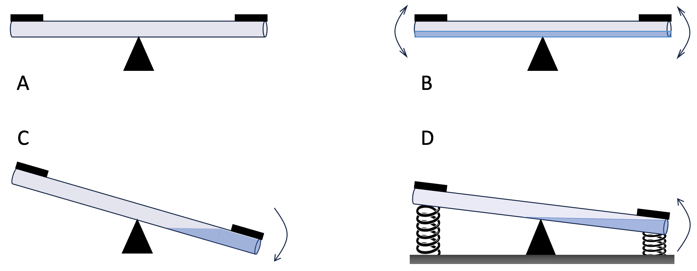
Figure 10.13. Countering a positive feedback loop with a negative feedback loop. A, a typical see-saw at rest. B, water in the central beam of a see-saw makes the horizontal position unstable. C, a slight up or down movement in the see-saw will cause all the water to rush to the lower end, reinforcing the initial movement. D, using springs to counter the movement of the see-saw.
Note how the spring-mediated negative feedback in the above example doesn’t restore the see-saw to its feedback-free state (panel A). Instead, it reduces the range of movement of the see-saw. The stronger the springs, the less the see-saw will be able to move. Adding new feedbacks to a system can change the system behavior in surprising ways. So, proceed with caution.
The above example used a negative feedback loop. It is also possible to use an opposing positive feedback loop to counteract an existing positive feedback loop. But introducing new positive feedback loops into a system requires even more caution because competing positive feedback loops are apt to create Runaway Polarization and its attendant disadvantages.
One way to avoid this kind of unintended consequence is to create a positive feedback loop that is complementary rather than in-competition with existing feedbacks. This approach has the advantage of exploiting the self-fulfilling nature of positive feedback loops, allowing rapid, low-cost growth. If someone has a lemonade monopoly in your neighborhood, you could embark on selling addictively tasty cookies instead of trying to break the lemonade monopoly. Once your cookie monopoly gets established, you might start offering milk alongside the cookies, then fruit juices, then soft-drinks, and so on. Needless to say, the risk here is that in trying to break one monopoly, we end up creating another.
10.16 Repair Existing Damage
The effects of past inequities are difficult to erase, as lingering glass ceilings for women, everlasting racial disparities, and spirals of doom in decolonized nations demonstrate. The subject is way too big and complex to be given the attention it deserves here. But the discussions in this book shed light on one particular aspect that I want to highlight: RAP creates uneven playing fields. One-off interventions may push the ball up the hill temporarily. But – unless the feedback, and therefore the uneven playing field is removed – the ball will roll back down the hill as soon as the intervention ends. Like the water-logged see-saw in Figure 10.13B, it is virtually impossible to stop a system with RAP-inducing feedbacks from moving to extreme states (as in Figure 10.13C). What this means in practice is that to fight RAP we have to address all the factors that contribute to creating an uneven playing field. In cases when RAP has taken root over decades or centuries, rebalancing the system may also take years-long effort and require fundamental changes to the system.
Take Haiti as an example. After 34 years of rebellion and war, in 1825 the French agreed to recognize Haiti’s independence in return for an “indemnity” of 150 million Francs (later reduced to 90 million, or US $32.5 billion in 2022 currency 108) for their loss of property and income 52109. The indemnity repayments “had a punitive dimension and contributed to the long-lasting instability and poverty of Haiti” 53 that continues today. For example, in 1914–15, 80% of Haitian government revenue was spent on payments to France 54. One estimate suggests the indemnity was equivalent to 58 years of Haiti’s annual income 55. In 1922, the remainder of Haiti’s “debt” to France was taken up by American investors. It took until 1947 for Haiti to pay off all the associated interest to what is now Citibank.
There can be little doubt that Haiti’s growth as a nation has been hampered by its colonial past. In 2015, France officially apologized to Haiti, but it acknowledged only a moral debt 55.
While the damage done to Haiti by the French demand for “indemnity” is particularly notable, it is not the only source of Haiti’s problems. America’s role in Haiti did not start or end with its uptake of the “indemnity” debt. There have been countless US invasions, occupations, economic sanctions, and conditional aid packages. But such efforts have primarily aimed at serving US foreign and domestic priorities rather than improving civic infrastructure in Haiti 56.
The poverty imposed on Haiti by its internationally-enforced “debt” payments has trapped it in a never-ending vicious cycle of self-serving leadership and weak civic institutions that reinforce its troubled state and downward spiral. In 1987, for example, Haiti briefly made news by accepting a shipment of toxic incinerated trash from Philadelphia after at least nine other countries had refused to accept the shipment 57.
Haiti has spent much of the time since its independence under extreme financial and societal stress and turmoil 58. Even if, by a stroke of magic, Haiti suddenly received massive reparations from France, building up a functioning civic society in a 200-year-old country with no history of benign and effective governance will be challenging to say the least. To quote the MIT historian Malick Ghachem, Haiti needs
a complete political and constitutional reboot combined with a new social contract in which international institutions support rather than ignore the country’s least well-off citizens” 59.
And herein lies the rub: democracy can’t succeed without a functioning civic society, and building strong civic institutions takes generations. The vicious-cycles that trap people in the losing scenarios of the Tragedy of the Commons and the Prisoner’s Dilemma will dominate until people can trust each other and their civic institutions. But who will provide the decades of investment needed to establish such infrastructure in a desperately poor, massively corrupt, and poorly-educated 110 country? Haiti doesn’t have the human, societal, and financial resources to pull itself up by its own bootstraps. And because of the self-reinforcing feedback loops in place, gesture-politics, in which foreign countries/organizations parachute-in, install or stabilize a government, and then walk away only has fleeting effects.
Is Haiti doomed forever? Not if – with international help – its citizens can find ways of self-organizing to nurture long-term moves towards well-functioning civic institutions. The key is to use local knowledge and personal ties to (slowly) change the social conditions such that people can have trust in each other, in their leaders, and in their civic organizations. As an example of such an effort, consider Las Guardianas del Conchalito (Guardians of the Shells), a group of local women in the El Manglito area of La Paz, Mexico; the sort of neighborhood that taxis sometimes refuse to enter.
Around 2016-2017, a few uneducated, poor, local women got fed up with the desolate state of their mangroves, the fly-tippers, the local narco-gangs, and the illegal fishing encroaching on them. A non-profit group, Noroeste Sustentable (NoS) 111, had been trying to guide the local men towards sustainable fishing, but their efforts weren’t getting far 60. The women decided to do something about it, and because they knew most of the trouble-makers (some of them were their own sons, husbands, or fathers), they knew how to handle them.
Step by step, the group grew in membership and achievements. Once they had established themselves as a collective, the women joined forces with another collective, the Organization of Fishermen Rescuing the Inlet. A year later, they obtained a concession for 2,048 hectares of their cove. In the years since, with advice, training, and support from NoS and another nonprofit (wildcoast 112), the women have cleaned up the mangroves, chased away the fly-tippers and gangs, and organized profitable collective farming of the scallops that the area is famous for 61,62. Their efforts have been so successful that, just before the Covid-19 pandemic, drug traffickers tried – unsuccessfully – to muscle in 62.
Every situation is different. The constraints and challenges facing people in Haiti are not the same as those facing Las Guardianas in La Paz. And, individually, small, local efforts don’t change a nation’s future. But remittances from Haitian emigrants around the world made up more than one-fifth of Haiti’s 2022 gross domestic product (GDP) 63. And emigrant diasporas are increasingly contributing to the development of their countries of origin by supporting local community initiatives, both financially, and by volunteering their expertise and services 64. The Haitian expat community is big enough 113 that it can inspire and support nationwide changes. I am not saying this is all that is needed, but that efforts like this are needed to change the social dynamics within Haiti so that other efforts can succeed.
As Lin Ostrom’s work amply demonstrated, distributed, cooperative ventures can be highly effective, but only in settings where people are empowered to create their own rules, monitor resource usage, and sanction cheaters. At the same time, support from national and international bodies is crucial to educate and train people, to provide technical support/advice when needed, and to protect nascent efforts from take-over by predatory gangs, businesses, or political interests.
Repairing the damage of past inequities requires the kind of long-term commitment that can only be provided by the locals with hands-on experience, and skin in the game. But support from external bodies (governments, non-profits, etc.), will be needed to create the nurturing environments that are necessary to make cooperative, self-managed communities succeed.
10.17 Build Nurturing Communities
Two results that I presented in earlier chapters may have left you with the discouraging impression that inclusive and cooperative behavior may often be an unreachable ideal. On the one hand, we saw that the number of people we can reliably cooperate with is limited. We can increase that number by means of reputations, customs, norms, and laws. But, in the absence of extreme policing, the extent to which we can trust people that we don’t personally know diminishes as the group size increases. On top of this, we saw in Figure 6.7 that as the proportion of cheaters in a group increases, the rewards of cooperativity diminish, ultimately making cooperation a losing proposition.
However, these limits on cooperation are the result of operating conditions that we need not take for granted. A broad range of game theory models, simulation studies, and lab experiments carried out over the past 60 years (see Box 10.1) suggest that cooperative societies emerge frequently and reliably when social conditions support Ostrom’s Principles and a seed group of activists act to start the ball rolling.
I use the phrase “start the ball rolling” intentionally, because evidence from simulation studies suggests that mostly-uncooperative and mostly-cooperative societies are each stable steady states. As we saw in Chapter 3, such alternate stable steady states are analogous to a ball resting in one of two valleys on either side of a hill. To move the ball from one valley (steady state) to the other, we have to roll the ball up and over the peak. That is what activists and organizers do. However, community organizers don’t have to push the ball alone because – when Ostrom’s Principles are in place – their actions trigger a self-fulfilling positive feedback loop. Once activists start making cooperation feasible, others see the opportunity for more profitable future interactions and start an avalanche. As long as people can monitor each other and apply rewards and punishments as appropriate, cooperation spreads like a contagion. Governments can greatly facilitate this process through laws that enable communities to police themselves, and to administer quick, transparent, and proportionate rewards and punishments.
Box 10.1. Creating Cooperativity
Variations of the saying “a single flower does not make spring” are common around the world. But it turns out that, if that proverbial “first flower” triggers a positive feedback loop, then it can make spring. This Box, provides a highly-abbreviated summary of research supporting this idea.
In his long-lived and often-taught 1965 text book “Social Psychology” 65, Roger Brown traced studies of crowd behavior to the French polymath Gustave Le Bon’s 1895 book “The Crowd: A Study of the Popular Mind”, which suggested that individuals behave differently when combined into a crowd. Like Le Bon’s, Brown’s book was a first of a kind. It marked the beginning of modern mathematical and numerical studies of crowd effects. In particular, most of Chapter 14 was dedicated to analyzing collective behavior using the Prisoner’s Dilemma and other games to provide insights into phenomena such as when crowds panic in a fire, and stampede.
The Prisoner’s Dilemma game, as we have seen, makes several unrealistic assumptions. In particular, players are assumed to know nothing about other player(s), and they are all assumed to behave rationally and identically. In a 1978 paper 66, Mark Granovetter (of the “importance of weak ties” fame) explored a family of mathematical crowd-effect models in which the players could track and respond to each other’s actions, and could behave differently from each other based on their starting points and experiences. Crucially, Granovetter showed that such models exhibit “band-wagon” (i.e. positive feedback) effects similar to those seen among people voting openly, taking part in strikes, or taking-up new technologies.
Starting in the mid- 1980s, as computers became ubiquitous, it became possible to simulate the behavior of “crowds” of virtual players. A key breakthrough was the publication (1985-1988) of three sister-papers 67–71 by Pamela Oliver, Gerald Marwell, and their collaborators. The papers employed simulation models that included two new features: variable (i.e. nonlinear), context-dependent effects of contributions to the public good, and varying degrees of personal interest in the common good. Like Granovetter, Oliver and Marwell also allowed players to take account of other players’ actions when deciding how much to contribute to a collective good.
Oliver and Marwell’s simulations showed that – in situations where early contributions inspire others to contribute – just a few community organizers or activists can create a “critical mass” of cooperativity that then spreads to entire communities. They also identified three conditions under which such snowball (i.e. positive feedback) effects take hold: (i) All players should know who did what. (ii) There should be proportionate rewards and punishments. (iii) All players should feel empowered to act and take responsibility. These requirements are essentially broadly-defined versions of the Guiding Principles for self-management that Elinor Ostrom and collaborators would later derive from their analysis of thousands of communities from around the world.
The models studied by Oliver and Marwell were focused on one particular form of social-good/shared-resource. In a series of papers spanning 1991-2002 72,73, the sociologist Michael Macy and his collaborators, demonstrated that cooperativity emerges reliably in a variety of public-good dilemmas. As long as there are appropriate rewards and punishments, and players can monitor the results of their interactions with others and adapt their strategies accordingly, they learn to cooperate.
Over the past two decades, researchers have confirmed and generalized the above results 74,75, and refined our understanding of the emergence of cooperativity in increasingly diverse settings. One particular such finding is especially relevant here, while small amounts of inequality in individual endowments create a diversity that facilitates the emergence of cooperativity, large differences in endowment inhibit cooperation 76.
The key to forming self-governing (self-organized) communities is to let the community “learn” the optimal set of rules, norms, and practices for maintaining cooperativity. “Learning” 114 can be formalized as an iterative optimization process in which the rules of behavior evolve gradually through a large number of small adaptations (see Box 10.2). Individual steps may not be optimal or even correct, but, in most settings, the adaptations cumulatively lead to near-optimal conditions. One implication is that – for cooperation to take root – there should be no community members who can force large, sudden changes. All members of a collective should have a real say in all decision making. Successful cooperation emerges when, instead of imposing regulations top-down, governing bodies nurture nested, distributed, self-management.
Fans of Friedrich Hayek’s ideas on spontaneous order in free markets, sometimes assume that Ostrom’s notion of self-governance and self-organization implies a lack of (or at least minimal) regulation. However, Ostrom was clear that governments and their institutions are needed to shape and nurture self-governance 77. For example, saying:
[…] a core goal of public policy should be to facilitate the development of institutions that bring out the best in humans. 78
Box 10.2. One Small Step at a Time
The political philosopher Hannah Arendt argued 79 that our actions have the capacity to change the world in ways “which cannot be expected from whatever may have happened before” 115. But, she added, the fact that our actions can create futures of “startling unexpectedness” also means that we cannot predict the results of our actions, especially because everybody else will also be acting and changing the world simultaneously. The “unexpected can be expected”, as can the “infinitely improbable”, she said.
I bring up Arendt’s arguments here because when we try to counter RAP, our actions may sometimes have unexpected consequences. So, whenever possible, we should proceed in small steps, monitor how the world responds to our actions, evaluate if those responses are consistent with our expectations, and make adjustments as needed. Tuft’s Peter Levine has a good name for this approach, tinkering, which he describes as:
setting up programs that embody one’s profound ethical commitments and theories of society and then experimenting in order to improve their impact – or if they consistently fail – scrapping them and moving on” 44.
Beyond philosophical considerations, statistics also supports a tinkering, incremental, approach to directing change. From a Bayesian statistics perspective, every time we do something, we change the probabilities of many future events, directly and indirectly. This changed landscape in turn alters the probability that our action will result in the intended outcome. After our initial action, our desired outcome may no longer be the most likely; we may need to correct course. Bigger steps are likely to have bigger, more complex effects, and so come with more surprises. To achieve a desired effect with a high likelihood, we have to take small steps, re-evaluating our best next-move each time.
And if you are not swayed by the above philosophical and statistical arguments, here is an argument based on optimization theory. Imagine you are in a mountainous landscape. Your goal is to find and climb the tallest peak. But the territory is unknown. You have no maps, no GPS, no guide books, etc. And a heavy fog is has settled in, so that you can only see the terrain immediately around you. This is the sort of challenge even the Mission Impossible team would be fool hardy to accept, but it’s what changing most Human Systems amounts to.
In simple systems, where the ups and downs of the search landscape are relatively few and gentle, and don’t evolve over time, a simple two-phase strategy usually works well enough 80. You first estimate the approximate location of the tallest mountain (e.g. by sampling the altitudes of random locations across the landscape). In the second phase, you start at the base of the presumed highest-peak, and keep moving upward, finding ways around or over obstacles as necessary. This approach is not guaranteed to find the highest peak, or the best possible way of getting to the top. But it usually finds a “good enough” solution, and has been extremely successful for addressing many everyday challenges such as route-planning for package deliveries and trash collection.
The behavior of human societies is too complex for us to develop optimal intervention strategies. The best we can do is an educated guess. And even if we were to find a near optimal strategy, its performance would quickly degrade because Human Systems are constantly changing. So, instead of taking big steps using perfectly optimized strategies, we are usually better off taking small steps using good-enough strategies, re-evaluating the situation, and adjusting our strategies accordingly.
10.20 References
1. Acemoglu, D. & Robinson, J. A. Why Nations Fail: The Origins of Power, Prosperity, and Poverty. (Currency, 2012).
2. Teuscher, C. Revisiting the Edge of Chaos: Again? BioSystems 218, 104693 (2022).
3. Downs, A. The Law of Peak-Hour Expressway Congestion. Traffic Q. 16, 393–409 (1962).
4. Brady, M. E. Dynamic Stability, Traffic Equilibrium and the Law of Peak-Hour Expressway Congestion. Transp. Res. Part B Methodol. 27, 229–236 (1993).
5. Gladwell, M. Outliers: The Story of Success. (Back Bay Books. Little, Brown and Company, 2008).
6. Chetty, R., Deming, D. J. & Friedman, J. N. Diversifying Society’s Leaders? The Determinants and Causal Effects of Admission to Highly Selective Private Colleges. https://doi.org/10.3386/w31492 (2023).
7. Pew Research Center. Public Trust in Government: 1958-2024. https://www.pewresearch.org/politics/2024/06/24/public-trust-in-government-1958-2024/.
8. Cooper, A., Bitonte, K. & Cuthbertson, R. 2025: The Year of Consequences. https://fgsglobal.com/radar (2025).
9. Desmond, M. Poverty by America. (Crown, New York, 2023).
10. McCoy, J. & Press, B. What Happens When Democracies Become Perniciously Polarized? https://carnegieendowment.org/research/2022/01/what-happens-when-democracies-become-perniciously-polarized?lang=en.
11. Scheidel, W. The Great Leveler - Violence and the History of Inequality from the Stone-Age to the Twenty-First Century. (Princeton University Press, 2017).
12. Wilkinson, R. G. & Pickett, K. E. Why the world cannot afford the rich. Nature 627, 268–270 (2024).
13. Correia, A. M. & Lopes, L. F. Revisiting Biodiversity and Ecosystem Functioning through the Lens of Complex Adaptive Systems. Diversity 15, 895 (2023).
14. Isbell, F., Tilman, D., Reich, P. B. & Clark, A. T. Deficits of biodiversity and productivity linger a century after agricultural abandonment. Nat. Ecol. Evol. 3, 1533–1538 (2019).
15. MacArthur, R. Fluctuations of animal populations, and a measure of community stability. Ecology 36, 533–536 (1955).
16. Levin, S. The architecture of robustness. in Global Challenges, Governance, and Complexity 16–23 (Edward Elgar Publishing Ltd., United Kingdom, 2019).
17. Cardinale, B. J. Biodiversity improves water quality through niche partitioning. Nature” 472, 86–89 (2011).
18. Arese-Lucini, F., Morone, F., Tomassone, M. S. & Makse, H. A. Diversity increases the stability of ecosystems. PLoS ONE 15, e0228692 (2020).
19. Yuan, M. M. et al. Climate warming enhances microbial network complexity and stability. Nat. Clim. Change 11, 343–348 (2021).
20. Dullien, S., Kotte, D. J., Marquez, A. & Priewe, J. The FInancial and Crisis of 2008-2009 and Developing Countries. (2010).
21. Tsiotas, D. & Tselios, V. Understanding the Uneven Spread of COVID-19 in the Context of the Global Interconnected Economy. Sci. Rep. 12, 666 (2022).
22. Hines, P., Balasubramaniam, K. & Costilla Chanchez, E. Cascading Failures in Power Grids. IEEE Potentials 28, 24–30 (2009).
23. Shepperd, J., Waters, E., Weinstein, N. D. & Klein, W. M. A Primer on Unrealistic Optimism. Curr. Dir. Psychol. Sci. 24, 232–237 (2015).
24. Saez, E. & Zucman, G. The Triumph of Injustice: How the Rich Dodge Taxes and How to Make Them Pay. (W. W. Norton & Co., 2019).
25. Addicott, M. A., Pearson, J. M., Sweitzet, M. M., Barack, D. L. & Platt, M. L. A Primer on Foraging and the Explore/Exploit Trade-Off for Psychiatry Research. Neuropsychopharmacology 42, 1931–1939 (2017).
26. Harvey, J. B. The abilene paradox: The management of agreement. Organ. Dyn. 3, 63–80 (1974).
27. BarNir, A. Can Group- and Issue-related Factors Predict Choice Shift? Small Group Res. 29, 308–338 (1998).
28. Ford, H. V., Jones, N. H., Davies, A. J., Godley, B. J. & et. al. The Fundamental Links Between Climate Change and Marine Plastic Pollution. Sci. Total Environ. 806, 150392 (2022).
29. Schmidt, C., Kühnel, D., Materić, D., Stubenrauch, J. & et. al. A Multidisciplinary Perspective on the Role of Plastic Pollution in the Triple Planetary Crisis. Environ. Int. 193, 109059 (2024).
30. Brance, K., Chatzimpyros, V. & Bentall, R. Increased Social Identification Is Linked with Lower Depressive and Anxiety Symptoms Among Ethnic Minorities and Migrants: A Systematic Review and Meta-Analysis. Clin. Psychol. Rev. 99, 102216 (2023).
31. Allen, K.-A., Kern, M. L., Rozek, C. S., McInereney, D. & Slavich, G. M. Belonging: A Review of Conceptual Issues, an Integrative Framework, and Directions for Future Research. Aust. J. Psychol. 73, 87–102 (2021).
32. Mason, L. Ideologues Without Issues the Polarizing Consequences of Ideological Identities. Public Opin. Q. 82, 866–887 (2018).
33. Coleman, N. V. & Williams, P. Feeling Like My Self: Emotion Profiles and Social Identity. J. Consum. Res. 40, 203–222 (2013).
34. Fersh, R. & Levison, M. From Conflict to Convergence: Coming Together to Solve Tough Problems. (John Wiley & Sons, 2024).
35. Mason, L. Uncivil Agreement: How Politics Became Our Identity. (University of Chicago Press, 2018).
36. Morris, M. Tribal: How the Cultural Instincts That Divide Us Can Help Bring Us Together. (Thesis/Penguin, 2024).
37. Sennett, R. Together: The Rituals, Pleasures, and Politics of Cooperation. (Yale University Press, 2012).
38. Wolpert, D. H. & Macready, W. G. No Free Lunch Theorems for Optimization. IEEE Trans. Evol. Comput. 1, 62–82 (1997).
39. Baum, M. A. & Zhukov, Y. M. Media Ownership and News Coverage of International Conflict. Polit. Commun. 36, 36–63 (2019).
40. Garz, M. & Ots, M. Media Consolidation and News Content Quality. J. Commun. jqae053 (2025).
41. Bolsen, T. & Shapiro, M. A. The US News Media, Polarization on Climate Change, and Pathways to Effective Communication. Environ. Commun. 12, 149–163 (2017).
42. Putnam, R. D. Bowling Alone: The Collapse of American Community. (Simon and Schuster, 2000).
43. Putnam, R. D. Bowling Alone: America’s Declining Social Capital. J. Democr. 6, 65–78 (1995).
44. Levine, P. We Are the Ones We Have Been Waiting For: The Promise of Civic Renewal in America. (Oxford University Press, 2013).
45. Krznaric, R. The Good Ancestor: A Radical Prescription for Long-Term Thinking. (Ebury Publishing, 2020).
46. Gentzkow, M. & Shapiro, J. M. What Drives Media Slant? Evidence from U.S. Daily Newspapers. Econometrica 78, 35–71 (2010).
47. Carlson, J. M. & Doyle, J. Complexity and robustness. Proc. Natl. Acad. Sci. USA 99, 2538–2545 (2002).
48. Granovetter, M. The Strength of Weak Ties. Am. J. Sociol. 78, 1360–1380 (1973).
49. Shinbrot, T., Grebogi, C., Yorke, J. A. & Ott, E. Using small perturbations to control chaos. Nature 363, 411–417 (1993).
50. Ecker, U. K. H. et al. Combining Refutations and Social Norms Increases Belief Change. Q J Exp Psychol Hove 76, 1275–1297 (2022).
51. Miller, D. J. HAITI: Aristide’s Call for Reparations From France Unlikely to Die. Inter Press Service (2004).
52. Girard, P. R. The Slaves Who Defeated Napoléon: Toussaint Louverture and the Haitian War of Independence, 1801–1804. (University of Alabama Press, 2011).
53. Henochsberg, S. Public debt and slavery: the case of Haiti (1760-1915). (Master’s Thesis, Paris School of Economics, 2016).
54. Bauduy, J. The 1915 U.S. Invasion of Haiti: Examining a Treaty of Occupation. Soc. Educ. 79, 244–249 (2015).
55. Oosterlinck, K., Panizza, U., Weidemaier, W. M. C. & Gulati, M. A Debt of Dishonor. Boston Univ. Law Rev. 102, 1247–1275 (2022).
56. Easterly, W. The White Man’s Burden : Why the West’s Efforts to Aid the Rest Have Done so Much Ill and so Little Good. (Penguin, 2006).
57. Clapp, A. The Waste Wars: The Wild Afterlife of Your Trash. (Little, Brown and Company, 2025).
58. Who removed Aristide? Paul Farmer reports from Haiti. London Review of Books vol. 26 (2004).
59. Ghachem, M. How the US Could Really Help Haiti. Americas Quarterly (2021).
60. Todos Santos Eco Adventures. Las Guardianas del Conchalito. https://tosea.net/las-guardianas-del-conchalito/ (2025).
61. Moorhead, J. The women protecting mangroves and defying chauvinists. The Guardian Weekly 26–27 (2025).
62. Santos, A. The story of a dying fishing village in La Paz (and the women who revived it). El Pais (2022).
63. Dain, B. & Batalova, J. Haitian Immigrants in the United States. Migration Policy Institute Spotlight https://www.migrationpolicy.org/article/haitian-immigrants-united-states-2022 (2023).
64. Ionescu, D. Engaging Diasporas as Development Partners for Home and Destination Countries: Challenges for Policymakers. https://www.iom.int/sites/g/files/tmzbdl2616/files/2018-07/MRS26.pdf (2006).
65. Brown, R. Scoial Psychology. (The Free Press/Collier Macmillan, 1965).
66. Granovetter, M. Threshold Models of Collective Behavior. Am. J. Sociol. 83, 1420–1443.
67. Marwell, G. & Oliver, P. E. The Critical Mass in Collective Action: A Micro-Social Theory. (Cambridge University Press, 1993).
68. Oliver, P., Marwell, G. & Teixeira, R. A Theory of the Critical Mass. I. Interdependence, Group Heterogeneity, and the Production of Collective Action. Am. J. Sociol. 91, 522–556 (1985).
69. Oliver, P. E. & Marwell, G. The Paradox of Group Size in Collective Action: A Theory of the Critical Mass. II. Am. Sociol. Rev. 53, 1–8 (1988).
70. Marwell, G., Oliver, P. E. & Prahl, R. Social Networks and Collective Action: A Theory of the Critical Mass. III. Am. J. Sociol. 94, 502–534 (1988).
71. Oliver, P. E. & Marwell, G. Whatever Happened to Critical Mass Theory? A Retrospective and Assessment. Sociol. Theory 19, 292–311 (2001).
72. Macy, M. W. Chains of Cooperation: Threshold Effects in Collective Action. Am. Sociol. Rev. 56, 730–747 (1991).
73. Macy, M. W. & Flache, A. Learning dynamics in social dilemmas. Proc. Natl. Acad. Sci. USA 99, 7229–7236 (2002).
74. Gallo, E., Riyanto, Y. E., Teh, T.-H. & Roy, N. strong links promote the emergence of cooperative elites. Sci. Rep. 9, 10857 (2019).
75. Hilbe, C., Šimsa, S., Chatterjee, K. & Nowak, M. A. Evolution of cooperation in stochastic games. Nature 559, 246–249 (2018).
76. Wang, X. et al. Cooperation and coordination in heterogeneous populations. Philos. Trans. R. Soc. B 378, 20210504 (2023).
77. Mansbridge, J. The Role of the State in Governing the Commons. Environ. Sci. Policy 36, 8–10 (2014).
78. Ostrom, E. Beyond Markets and States: Polycentric Governance of Complex Economic Systems. Am. Econ. Rev. 100, 641–672 (2010).
79. Arendt, H. The Human Condition. (The University of Chicago Press, 1958).
80. Billinger, S., Stieglitz, N. & Schumacher, T. R. Search on Rugged Landscapes: An Experimental Study. Optim. Sci. 25, 93–108 (2014).
81. Sunstein, C. R. How Changes Happens. (The MIT Press, 2019).
82. Dunaetz, D. R. Cultural Tightness-Looseness: Its Nature and Missiological Applications. Missiology Int. J. 47, 410–421 (2019).
83. Hofstede, G. Dimensionalizing Cultures: The Hofstede Model in Context. Online Read. Psychol. Cult. 2, 8 (2011).
84. Gelfand, M. J., Raver, J. L., Nishii, L., Leslie, L. M. & et. al. Differences Between Tight and Loose Cultures: A 33-Nation Study. Science 332, 1100–1104 (2011).
85. Harrington, J. R. & Gelfand, M. J. Tightness–looseness across the 50 united states. PRoceedngs Natl. Acad. Sci. USA 111, 7990–7995 (2014).
86. Elster, A. & Gelfand, M. J. When Guiding Principles Do Not Guide: The Moderating Effects of Cultural Tightness on Value-Behavior Links. J. Pers. 89, 325–337 (2021).
87. Gelfand, M. J., Gavrilets, S. & Nunn, N. Norm Dynamics: Interdisciplinary Perspectives on Social Norm Emergence, Persistence, and Change. Annu. Rev. Psychol. 75, 341–378 (2024).
88. Paluck, E. L., Porat, R., Clark, C. S. & Green, D. P. Prejudice Reduction: Progress and Challenges. Annu. Rev. Psychol. 60, 339–367 (2017).
89. Weems, C. F., McCurdy, B. H., Scozzafava, M. D., Pina, A. A. & Varela, R. E. A Systematic Review of Experimental Studies Evaluating Antiracist Program Techniques for Children and Adolescents. Merrill-Palmer Q. 68, 323–367.
90. Dunbar, R. I. M. Breaking Bread: the Functions of Social Eating. Adapt. Hum. Behav. Physiol. 3, 198–211 (2017).
91. De Neve, J.-E., Dugan, A., Kaats, M. & Prati, A. Sharing Meals with Others: How Sharing Meals Supports Happiness and Social Connections. Chapter 3 doi.org/10.18724/whr-g119-bv60 (2025).
92. Jönsson, H., Michaud, M. & Neuman, N. What Is Commensality? A Critical Discussion of an Expanding Research Field. Int. J. Environ. Res. Public. Health 18, 623 (2021).
93. Coleman, P. T. The Five Percent: Finding Solutions to Seemingly Impossible Conflicts. (Public Affairs, 2011).
94. Coleman, P. T. The Way Out: How to Overcome Toxic Polarization. (Columbia University Press, 2021).
95. Coleman, P. T., Vallacher, R., Nowak, A. & Ngoc, L. B. Intractable Conflict as an Attractor: Presenting a Dynamical Model of Conflict, Escalation, and Intractability. in Proc. 18th Annual Conference of the International Association for Conflict Management (IACM) (2005).
96. Coleman, P. T. & Phan, L. H. What Motivates Bridge Building Across Pernicious Group Divides? The Effects of Regulatory Motives, Framing, and Fit on Increasing Constructive Engagement Across Political and Racial Divisions. Front. Soc. Psychol. 2, 1352284 (2024).
97. Heath, R. Seducing the Subconscious: The Psychology of Emotional Influence in Advertising. (Wiley-Blackwell, 2012).
98. Matz, S. C., Kosinski, M., Nave, G. & Stillwell, D. J. Psychological Targeting as an Effective Approach to Digital Mass Persuasion. Proc. Natl. Acad. Sci. USA 114, 12714–12719 (2017).
99. Wang, T., Bian, J., Liu, S., Zhang, Y. & Liu, T.-Y. Psychological Advertising: Exploring User Psychology for Click Prediction in Sponsored Search. Proc. 19th ACM SIGKDD Int. Conf. Knowl. Discov. Data Min. (2013).
100. Karpf, D. The Internet and American Political Campaigns. Forum J. Appl. Res. Contemp. Polit. 11, 413–428 (2013).
101. Bär, D., Pröllochs, N. & Feuerriegel, S. The Role of Social Media Ads for Election Outcomes: Evidence from the 2021 German Election. PNAS Nexus 4, pgaf073 (2025).
102. Weyler, R. Greenpeace - How a Group of Ecologists, Journalists, and Visionaries Changed the World. (Rodale, 2004).
103. Hunt, R. The Storming of the Mind - inside the Consciousness Revolution. (McClelland and Stewart. Available online at: https://archive.org/details/stormingofmind00huntrich/page/n5/mode/2up, 1971).
104. Holgate, J. & Page, J. Change Makers: Radical Strategies for Social Movement Organising. (Policy Press, 2025).
105. Duyvendak, J. W. & Kesic, J. The Return of the Native: Can Liberalism Safeguard Us Against Nativism? (Oxford University Press, 2022).
106. Sommer, J. & Oktar, K. Maps by Which We May Not Steer: Why Psychologists Should Expect Low Belief-Behavior Correspondence. Psychol. Inq. 36, 60–66 (2025).
107. Vu, L., Soraperra, I., Leib, M., van der Weele, J. & Shalvi, S. Ignorance by Choice: A Meta-Analytic Review of the Underlying Motives of Willful Ignorance and Its Consequences. Psychol. Bull. 149, 611–635 (2023).
108. Bregman, R. Moral Ambition: Stop Wasting Your Talent and Start Making a Difference. (Little, Brown and Company, 2025).
109. Varese, F. & Yaish, M. The Importance of Being Asked: The Rescue of Jews in Nazi Europe. Ration. Soc. 12, 307–334 (2000).
110. Hasan, I., He, Q. & Lu, H. The impact of social capital on economic attitudes and outcomes. J. Int. Money Finance 108, 102162 (2020).
111. Pitkin Derose, K. & Varda, D. M. Social Capital and Health Care Access: A Systematic Review. Med. Care Res. Rev. 66, 272–306 (2009).
112. Harris, M. A. & Orth, U. The Link Between Self-Esteem and Social Relationships: A Meta-Analysis of Longitudinal Studies. J. Pers. Soc. Psychol. 119, 1459–1477 (2020).